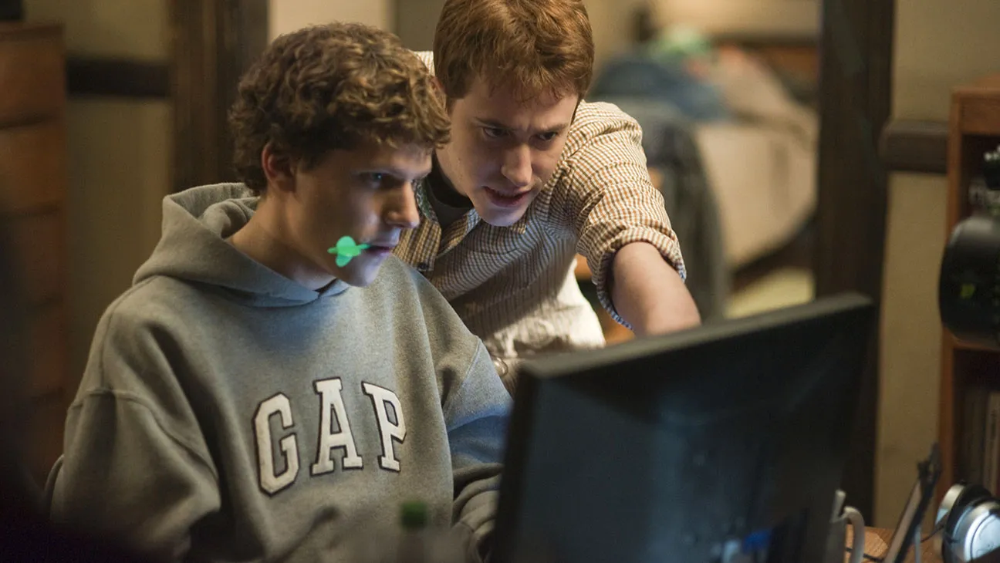
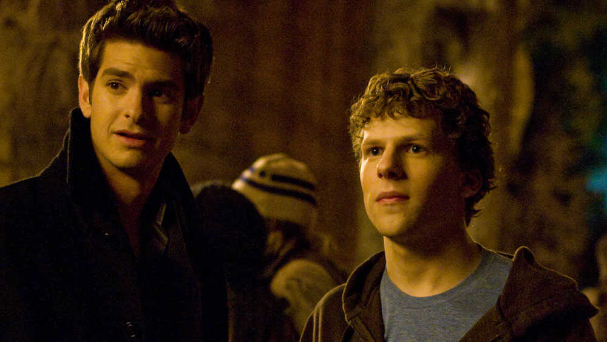
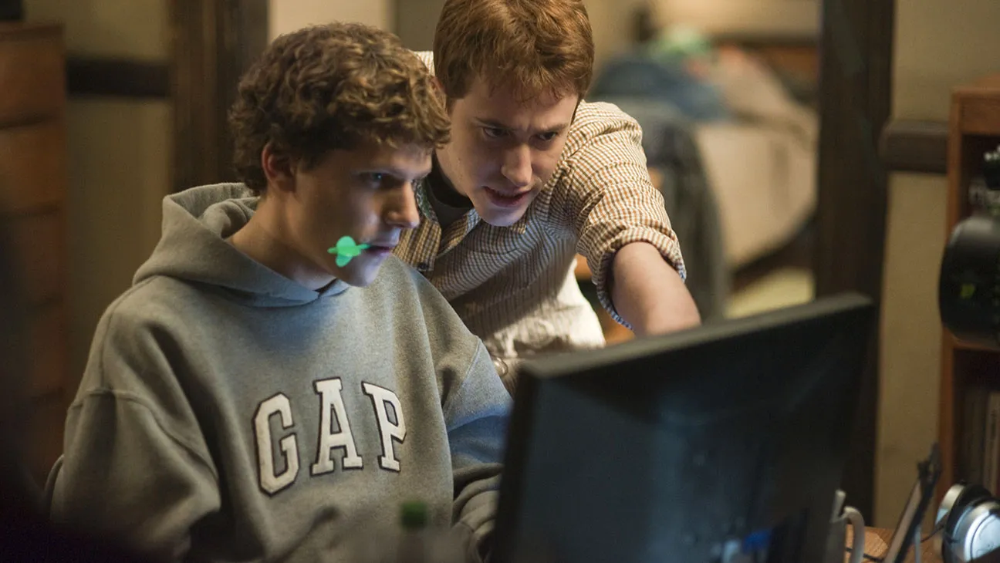
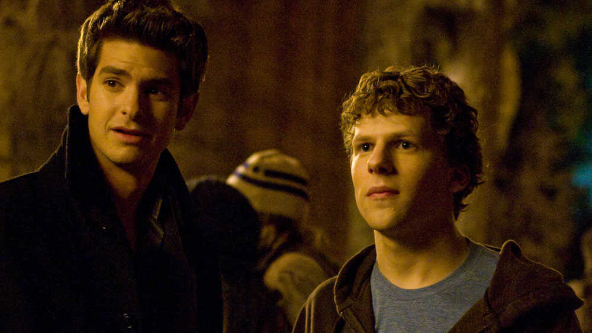

About the Director
David Andrew Leo Fincher (born August 28, 1962) is an American film director. His films, most of which are psychological thrillers, have collectively grossed over $2.1 billion worldwide and have received numerous accolades, including three Academy Awards for Best Director nominations for him. He has also received four Primetime Emmy Awards, two Grammy Awards, a BAFTA Award, and a Golden Globe Award.

Plot
The story of the creators of Facebook and the subsequent legal battles that stretched out over several years. Told mostly in flashbacks while Mark Zuckerberg gives depositions in two lawsuits, the idea of a shareable social information site came to him one night after he hacked into his school's database and published the photos of all the women at the school. One of his roommates, Eduardo Saverin, provides the upfront financing and Zuckerberg deftly outmaneuvers two other students who had a similar idea. The relationship with Saverin deteriorates and he soon finds himself on the outside looking in. All in all, an unflattering picture of all those involved.


Research Summary
In October 2003, Harvard student Mark Zuckerberg, played by actor Jesse Eisenberg, came up with the idea of creating a website to rate the attractiveness of female Harvard students after his girlfriend Erica Albright told him about it in the first scene of a movie that he had left. After a bad date where his ego and aggressiveness bring out the worst in him, he goes to the local bar. Over the course of a night, a half-drunk Mark hacks into the databases of various dormitories, downloading photos and names of female students using a chess player ranking algorithm provided by his best friend, boyfriend Eduardo Saverin, played by Andrew Garfield, in a few hours, creates a website called "FaceMash.com" where male students can interactively select, which of two girls presented at the same time is more attractive.
Mark receives a six-month academic suspension after traffic on the website disrupts part of Harvard's computer network and is vilified by much of Harvard's women's community. However, the popularity of "FaceMash" and the fact that he created it in one drunken night brought him to the attention of Cameron Winklevoss and Tyler Winklevoss, identical twins and members of the Harvard Rowing team, and their business partner Divya Narendra.This got him a job with the Winklevoss twins as a programmer for their Harvard Connection website.
Shortly thereafter, Mark meets his friend Eduardo and tells him about his idea for something he calls "Thefacebook", an online social networking site exclusively for Harvard University students. He explains that this would enable secure exchange of personal and social data. Eduardo agrees to help Mark by donating $1,000 to help run the site. Once they're done, they distribute the link to Eduardo's contacts at Phoenix SK's last club and it quickly becomes very popular among the students.When they discovered Facebook, twins Winklevoss and Narendar believed that Zuckerberg had stolen their idea by deprecating their website. Cameron and Divya want to sue Mark for intellectual property theft, but Tyler convinces them that they can handle the case like Harvard gentlemen without going to court.
A few months later, during Bill Gates' lecture, another Harvard student, Christy Lee, introduced herself and her friend Alice to Eduardo and Mark. He asks the boys to “give us Facebook,” which impresses both of them. Mark later meets his ex-girlfriend Erika, who is unaware of Thefacebook's existence because she is not a student at Harvard University.Mark is offended by this and decides to expand the website to more schools. Christy, Mark and Eduardo then return to Mark's room, where they describe the company's structure and its future growth plan.
In the spring of 2004, Facebook's popularity grew and spread to other schools in the northeastern United States as the Winklevoss twins and Narendra became increasingly angry that "their idea" was created without them. Tyler refuses to report her and instead accuses Mark of violating Harvard's student code of conduct. Through their father's contacts, they arrange a meeting with Harvard President Larry Summers, who is dismissive and sees no potential value in disciplinary action or a lawsuit against Thefacebook itself.
Through Christy Lee, current girls Eduardo, Eduardo and Mark arrange a meeting with Napster co-founder Sean Parker, played by Justin Timberlake. When Christy, Mark and Eduardo meet Parker at the trendy fusion restaurant in New York, Eduardo becomes skeptical of the eccentric Parker and points out his problematic personal and professional history.However, Mark was impressed with Parker as he presented a similar vision for Facebook. Although no agreement could be reached, Parker suggested removing "The" from Thefacebook and simply replacing it with "Facebook."
That summer, at Parker's suggestion, Mark moves the company's base of operations to Palo Alto, California, while Eduardo remains in New York to seek advertising support. When Eduardo arrives from New York, he is upset to learn that Parker lives in the house and makes business decisions on Facebook. After an argument with Mark, the vengeful Eduardo freezes the company's bank account and returns to New York.After his return, Christy and Eduardo argue on his Facebook profile, which still lists him as "single." Christy accuses Eduardo of cheating and sets fire to the scarf he gave her. As Eduardo puts out the fire, Mark calls him angry because Facebook has frozen his bank accounts and reveals that they received money from an "angel investor" through Parker's contacts. Due to Christa's jealousy, Eduardo ends his relationship with her. Meanwhile, in England at the Henley Royal Regatta, the Winklevoss twins are outraged that Facebook has expanded its operations to several local universities and ultimately decide to sue Mark.Eduardo also discovered that the agreement he had signed with Parker's investors allowed them to dilute his stake in the company from one-third to less than one-tenth of a percent, while at the same time he retained a percentage of everything else. He confronts his old friend Mark at his new Facebook office in downtown Los Angeles and announces his intention to sue him.
Later that evening, Parker and several Facebook interns are arrested for cocaine possession during a party celebrating Facebook's millionth member.It is heavily implied (though never fully explained) that Mark anonymously tipped off the police to search the fraternity house where the party was taking place, and that he may have had someone plant drugs at the party to set up Parker and intentionally arresting his interns and then kicking them out. from the Facebook Business Center.
In the final scene, the young defense attorney informs Mark that they will settle with Eduardo because the sordid details of Facebook's founding and Mark's cynical personality will cause the jury to become very unsympathetic toward him. The video ends with Mark sending his ex-girlfriend Erika a friend request on Facebook, refreshing the page every few seconds as he waits for a response that never comes.
Several final on-screen texts indicate that the Winklevoss twins have accepted a $65 million settlement and signed a nondisclosure agreement. They then took part in rowing at the Beijing Olympics and finished sixth.
Eduardo received undisclosed compensation and his name made headlines as the co-founder of Facebook.
And that Facebook currently has 500 million users in 207 countries and is worth more than $25 billion. That's why Mark Zuckerberg became the world's youngest self-made billionaire.
 


